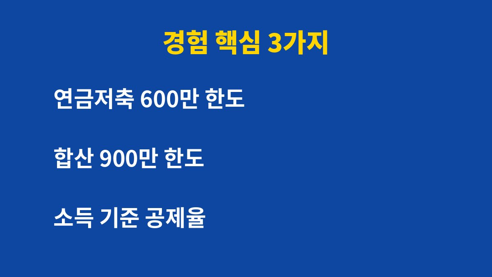

퇴직금이 없는 자영업자가 연금저축과 IRP 중 어디부터 채워야 할지 고민하는 분들이라면 끝까지 읽어 보시길 바랍니다.
자영업자 연금저축 IRP는 연금저축을 먼저 채우고 남는 한도를 IRP로 채우는 순서를 제 기준으로 삼았고, 2026년 기준 세액공제 한도와 그렇게 정한 이유를 정리했습니다.
회사에 다닐 때는 퇴직금이 자동으로 쌓였지만 1인 사업자가 된 뒤에는 제가 챙기지 않으면 노후에 쓸 돈이 한 푼도 쌓이지 않았습니다.
매출이 불규칙하다 보니 매달 일정 금액을 넣는다는 것 자체가 부담이었습니다.
그래서 연금 계좌는 선택이 아니라 제가 직접 만드는 퇴직금이라고 생각하게 되었습니다.
이름도 비슷하고 세액공제도 같이 적용되어서 처음에는 둘 중 하나만 있으면 되는 줄 알았습니다.
알고 보니 공제 한도를 함께 쓰는 구조여서 순서를 정하는 것이 더 중요했습니다.
연금저축은 금융사에서 가입하는 개인 연금 상품이고 IRP는 퇴직금을 받거나 따로 적립할 수 있는 계좌라는 차이도 이때 구분했습니다.
연금저축은 연 600만 원까지, 연금저축과 IRP를 합치면 연 900만 원까지 세액공제 대상이 됩니다.
공제율은 종합소득금액이 4,500만 원 이하이면 16.5%, 초과하면 13.2%가 적용됩니다.
사업소득자는 총급여가 아니라 종합소득금액이 기준이라는 점도 이번에 알았습니다.
두 계좌 모두 한도 안에서 납입한 금액만 세액공제 대상이라는 점을 기억해 둘 필요가 있습니다.

| 구분 | 세액공제 대상 한도 | 확인한 점 |
|---|---|---|
| 연금저축 단독 | 연 600만 원 | 먼저 채울 기본 한도 |
| 연금저축과 IRP 합산 | 연 900만 원 | 남는 300만 원을 IRP로 검토 |
| 공제율 16.5% | 종합소득금액 4,500만 원 이하 | 최대 약 148만 원 환급 가능 |
| 공제율 13.2% | 종합소득금액 4,500만 원 초과 | 900만 원 기준 약 118만 원 |
위 표는 2026년 기준 일반적인 한도이며 실제 환급액은 세금 신고 결과에 따라 달라질 수 있습니다.
연금 계좌는 중간에 꺼내면 불이익이 생길 수 있어서 부가세와 종합소득세 낼 돈, 비상금을 먼저 따로 두고 남는 돈으로 시작했습니다.
급하게 돈이 필요할 때 연금 계좌를 깨면 그동안 받은 공제가 오히려 부담으로 돌아올 수 있기 때문입니다.
무리하게 900만 원을 목표로 잡지 않고 부담 없는 금액부터 넣으니 중간에 멈추는 일이 없었습니다.
매달 금액이 정해지니 지출 계획도 세우기 쉬웠습니다.
한도를 다 채우지 못해도 채운 만큼은 공제가 된다는 사실이 부담을 덜어 주었습니다.
처음에는 금액이 작아 보여도 해마다 이어 가면 노후에 쓸 돈이 눈에 보이게 쌓입니다.
회사원이던 시절에는 몰랐던 일을 이제는 제가 직접 챙긴다는 책임감도 생겼습니다.
종합소득세 신고 때 납입 내역이 공제 항목으로 잡히는 것을 보고 노후 준비와 세금 관리가 한 번에 된다는 점을 체감했습니다.
1. 올해 종합소득금액을 대략 계산해 공제율이 16.5%인지 13.2%인지 먼저 확인합니다.
2. 세금 낼 돈과 비상금을 따로 떼어 둔 뒤 남는 금액으로 납입 가능한 한도를 정합니다.
3. 연금저축 600만 원 한도를 먼저 채웁니다.
4. 한도가 남고 여유가 있을 때만 IRP로 최대 300만 원을 더합니다.
5. 매출이 줄어든 달을 대비해 자동이체 금액을 낮게 시작하고 분기마다 조정합니다.
자영업자 연금저축 IRP는 얼마를 넣느냐보다 어떤 순서로 무리 없이 이어 가느냐가 더 중요하다고 느꼈습니다.
금융 상품과 세율은 개인 상황에 따라 달라지므로 가입 전에 본인의 소득 구간을 확인하시기 바랍니다.
이번 달 비상금부터 먼저 점검해 보시길 바랍니다.
한 번에 크게 넣기보다 작게 시작해서 이어 가는 쪽이 저에게는 맞았습니다.
※ 본 글은 2026년 기준 개인 경험을 바탕으로 한 정보이며, 세금·금융 상품 선택은 본인 상황에 맞게 전문가와 확인하시길 바랍니다.